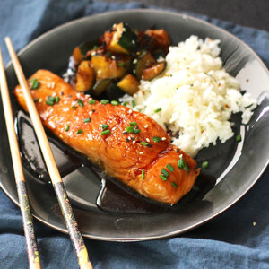
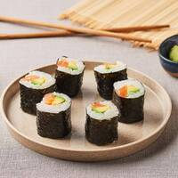

-
Pavés de saumon

Ingrédients pour 2 portions
- Deux pavés de saumon
- 2 cuillères à soupe d'huile d'olive
- Pincées de sel et poivre
- Huile d'olive
Préparation
- - Placer les pavés dans un plat
- - Les arroser d'huile d'olive
- - Saler et poivrer
- - Faire cuire au four pendant 20 minutes à 180°C
-
Saumon teriyaki
Ingrédients pour 2 portions
- 2 pavés de saumon d'environ 150g chacun
- 2 cuillères à soupe de graines de sésame
- 2 cuillères à café de gingembre frais râpé
- 200ml de sauce soja
- 150ml de mirin
- 4 cuillères à soupe de sucre semoule
Ingrédients et préparation de la sauce teriyaki
- Rendez-vous sur la page "Les bases culinaires" !
Préparation du poisson
- - Retirer les arêtes et la peau du saumon
- - Mélanger dans un plat le gingembre et la sauce
- - Faire mariner les pavés pendant 30 minutes au frigo
- - Faire chauffer une poêle
- - Égoutter le saumon
- - Le saisir 3 à 4 minutes de chaque côté
- - Essuyer la poêle et faire réduire la marinade 2 à 3 minutes
- - Remettre le saumon dans la poêle pour l'enrober de sauce
- - Saupoudrer le saumon de graines de sésame
-
Limande du Nord

Ingrédients pour 2 portions
- Deux filets de limande du Nord
- 2 cuillères à soupe d'huile d'olive
- Pincées de sel et poivre
- Jus de citron
Préparation
- - Faire chauffer une poêle avec de l'huile d'olive
- - Mettre les filets dans la poêle
- - Saler et poivrer
- - Faire cuire pendant 5 à 7 minutes
- - Arroser de jus de citron après la cuisson
-
Makis
Ingrédients (nombre de portions à déterminer)
- Riz japonais (quantité à déterminer)
- Feuilles de nori
- Crevettes équeuttées (quantité à déterminer)
Préparation
- - Faire cuire le riz à la japonaise
- - Une fois cuit, l'étaler sur une assiette pour qu'il tiédisse
- - Mettre une feuille de nori à plat sur la natte de bambou
- - Mettre du riz par dessus
- - Mettre des crevettes sur une rangée
- - Rouler bien serré les makis à l'aide de la natte en bambou
- - Découper le rouleau afin d'avoir des makis